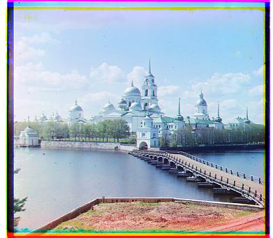
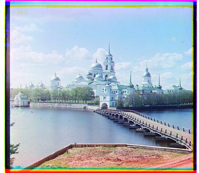

This project aims to create an RGB photo from the glass plate images in the Prokudin-Gorskii collection. Using the digitized Prokudin-Gorskii images, we must separate the photo into the three color channels (blue, green, and red), align the channels, and then stack them on top of each other to produce an RGB image.

I first began this project by implementing a single-scale version. This naive approach takes the red and green channels and aligns against
the blue channel by exhaustively shifting the RG channels over a window of [-15, 15] pixels while keeping the blue channel static.
The best displacement is calculated such that the SSD (Sum of Squared Differences) distance is minimized. Aligning the red and green
channels against the blue channel is the default alignment in my implemention, but one can also specify to align against the green
or the red channel in the command line as well.
I ran into trouble aligning the images and discovered the borders had hurt my results. I first tried taking
the SSD over the entire image and then over the middle third of the image, but still it wouldn't work. So I then
decided to compute the metric over a shorter window by dividing the image into a 3x3 grid and then computing the
SSD over the center rectangle in the 3x3 grid. This worked well with the smaller jpg images but took much longer
with the bigger tif files.
 


To speed up the search process, I used an image pyramid. I first started with the original full-scale image
then recursively scaled it down by 1/2 until the image was smaller than 200x200px. At this point, the image is small
enough to perform a naive alignment and calculate the displacement vector. This displacement vector then acts as
the starting point for the next level resolution where another search is performed over a [-15, 15] window. This
process repeats through the levels until it reaches the original image resolution, and we have a final updated
displacement vector.
I encountered a problem here where the images were only slightly off for both the tif and jpg images. I troubleshooted
this error by adding print statements to print out the image shape and the displacement vector at each level in
the recursion. The problem was that the algorithm stopped at the level right before the full-scale image. In other words,
I found the displacement for all the other levels except for the original image resolution. It was a small error in my
recursive function that I fixed, and after that was solved I was able to colorize all the example photos successfully.
Larger tif images were still taking quite a while so I shortened the window after getting the smallest resolution
displacement to a [-1,1] px window which greatly improved computational time while still maintaining proper alignment.


With Emir, the red channel did not match correctly when aligning against the blue channel and similarly with the blue channel against the red. This is because Emir's robe has very high saturated blues and low saturated reds so that when calculating the SSD, the closer the two channels matched, the larger the SSD distance actually was. SSD assumes that if the blue channel is high in intensity then the other two channels will also be high in intensity which is not the case here. The solution to this was to align with respect to the green channel.
Glassplate images provided by the Libary of Congress at http://www.loc.gov/pictures/search/?st=grid&co=prok .